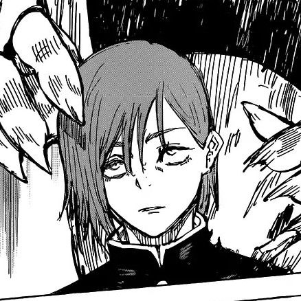

Eu gosto da Nobara porque ela é uma personagem muito comovente e tem uma personalidade forte e chamativa. Ela é uma guerreira feroz e leal aos seus amigos, e tem uma história de fundo interessante e complexa. Além disso, ela é muito habilidosa em combate corpo a corpo e utiliza uma técnica de maldição única que envolve o uso de pregos e um martelo para atacar seus inimigos. Sua interação com os outros personagens é muito divertida de assistir, e ela tem uma presença marcante na série.